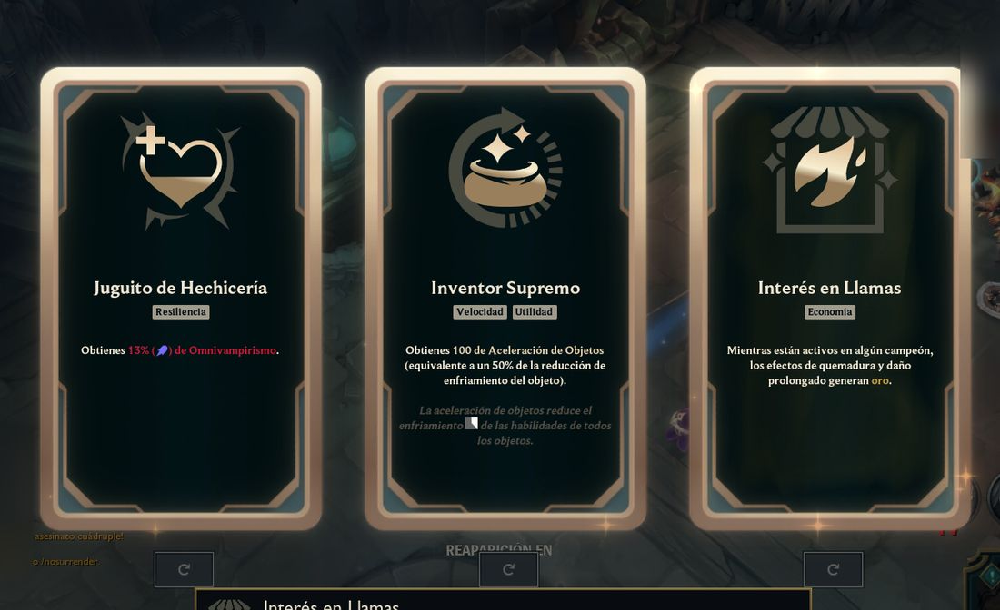
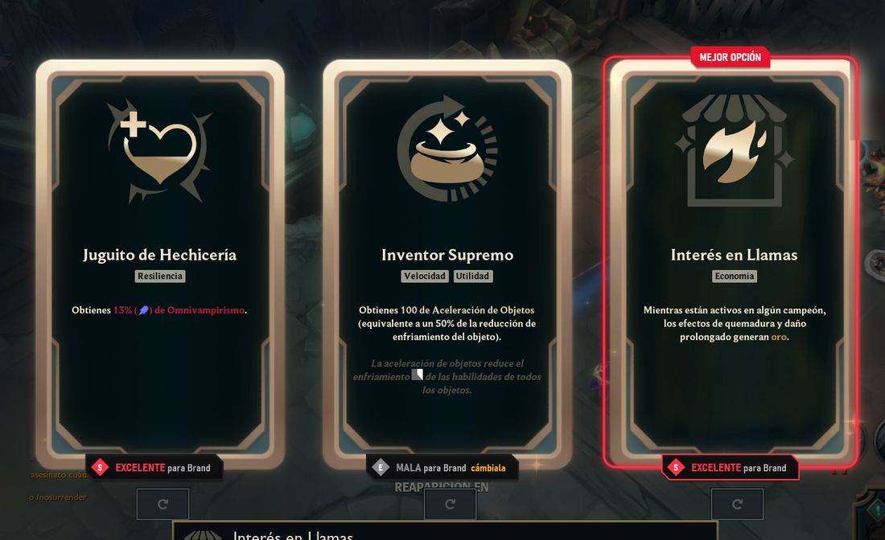

Etiquetas en vivo
Cada carta muestra qué tan buena es para tu campeón. La mejor queda marcada y las malas te sugieren cambiarlas. Si quieres, te lo dice en voz alta.
Companion para League of Legends
Xyra mira tus cartas de aumento en ARAM: Caos y Arena y marca la mejor para tu campeón en el momento en que salen, con estadísticas de OP.GG. Además importa runas, hechizos e ítems y te sugiere counters en la selección.
GratisSin anunciosCódigo abiertoWindows 10 y 11


Cómo funciona
No tienes que abrir nada: Xyra se entera solo de cuándo estás en partida y con qué campeón.
Sabe al instante si estás en la selección o en partida, y con qué campeón.
Con el reconocimiento de texto que trae Windows, solo con el juego al frente.
Compara cada aumento con las estadísticas de OP.GG para tu campeón.
Dibuja la etiqueta encima de la carta, en una capa que deja pasar tus clics.
Pruébalo
Cinco estilos para que las marcas combinen con cómo juegas. Toca uno para verlo sobre las cartas.
Qué hace
Vive en la bandeja del sistema y solo trabaja durante tus partidas.
Cada carta muestra qué tan buena es para tu campeón. La mejor queda marcada y las malas te sugieren cambiarlas. Si quieres, te lo dice en voz alta.
Runas, hechizos y set de ítems de OP.GG en tu cliente. Si quieres, se ponen solos al elegir campeón, cada hechizo en la tecla que ya usas.
Te dice qué campeón tomar de la banca y, en la Grieta, el counter de tu rival. Ordena por tier, por tu maestría o por lo que más juegas.
Opcional: acepta por ti cuando encuentras partida, después de la espera que elijas. Nunca pisa una respuesta que ya diste.
Tier list de aumentos por campeón, top de ARAM: Caos y tu winrate por cuenta. Después de cada partida ves si seguiste la recomendación.
Hecho en Rust, sin navegador mientras juegas. Un solo ícono abre Xyra y el LoL, y se actualiza con un botón.
Modos
Por qué Xyra
Ni en la app ni en el juego.
Instalas y listo: no te pide correo ni registro.
Una app nativa que no necesita otra plataforma debajo.
Cualquiera puede revisar qué hace, línea por línea.
Partidas y ajustes se guardan solo en tu computadora.
En español e inglés, con los nombres de tu cliente.
Así se ve
Toca una captura para verla en grande.
Juego limpio
Xyra hace lo mismo que las apps que Riot permite y nada más. Estas reglas son parte del proyecto.
Todos los detalles están en SECURITY.md.
Instalar
Baja el instalador de la última versión e instálalo. No pide permisos de administrador.
Pon el LoL en modo de ventana Sin bordes. Xyra lo hace por ti con el juego cerrado.
Entra a ARAM: Caos o Arena. Cuando salgan las cartas, Xyra ya las habrá marcado.
El instalador todavía no tiene firma digital, así que Windows puede mostrar "Windows protegió tu PC". Pulsa "Más información" y luego "Ejecutar de todas formas".
Novedades
Notas completas en GitHub.
Preguntas
Sí, y de código abierto con licencia MIT. No tiene anuncios ni cuentas.
Xyra no lee ni modifica el juego, no simula teclas y no juega por ti: solo mira la pantalla, dibuja encima y habla con el cliente, como otras apps de estadísticas. Es un proyecto de la comunidad sin aprobación de Riot, así que úsalo bajo tu responsabilidad.
Las etiquetas, en ARAM: Caos y Arena. Builds, runas y counters, también en la Grieta del Invocador.
En pantalla completa exclusiva Windows no deja dibujar nada encima del juego. Xyra puede ponerlo por ti y mantenerlo.
No. Mientras no juegas se queda quieto en la bandeja, y durante la partida solo lee la zona de las cartas cuando el juego está al frente.
Sí, pueden convivir. Si las dos importan runas solas, deja esa opción activa en una sola, y si tienes todas tus páginas de runas ocupadas, libera una para que Xyra tenga la suya.
Cuando sale una versión nueva, aparece un botón en la app. Descarga, comprueba el instalador y actualiza sin perder tus ajustes ni tus partidas.